マルシェ出展店舗紹介
2026年のマルシェを彩る、個性豊かな出展者の皆さんをご紹介します！
Gourmet 1. 飲食店・カフェ
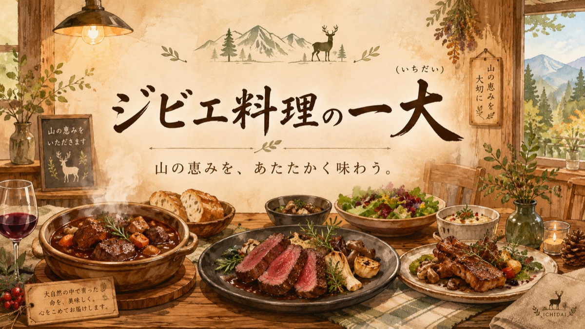
一大（いちだい）
- 住所: 益田市駅前町21-19 石見野ビル102号
- 営業時間: 11:30〜13:30、17:30〜23:00（水曜定休）
天然猪を使用したジビエ料理がメイン。チキン南蛮などジビエ以外のメニューもあり、禁煙で子供連れも安心。
公式Instagramを見る ➔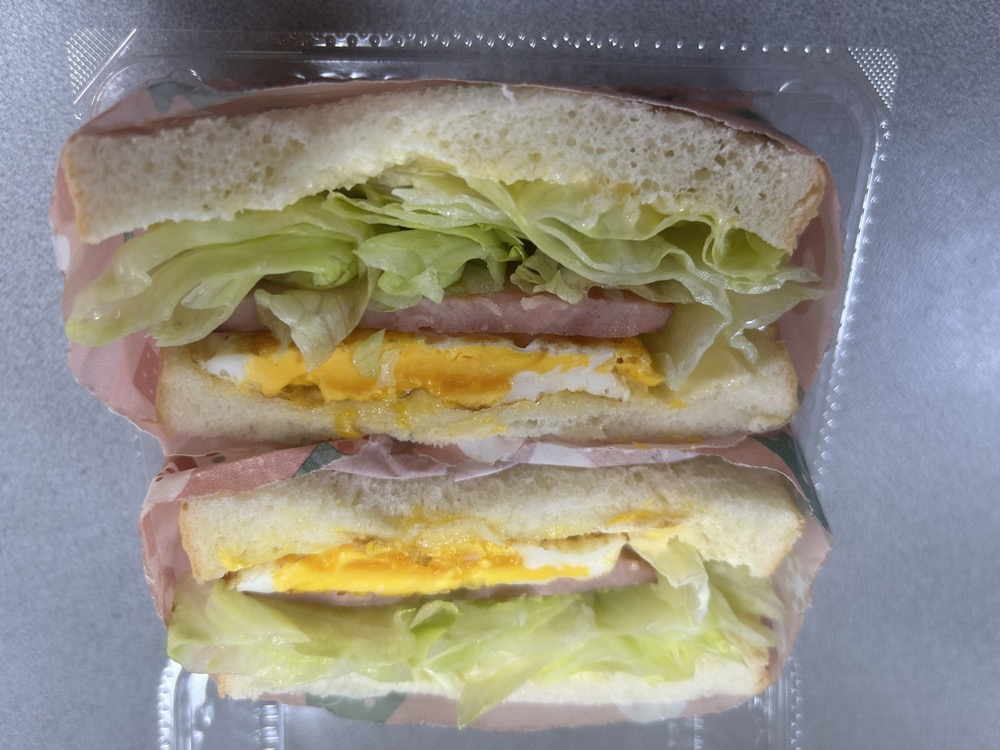
leaf（リーフカフェ）
- 住所: 益田市虫追町イ917-2
- 電話: 090-7540-2849
カフェスペースとして地域の方々に親しまれており、各種イベントやワークショップ、交流の場としても広く利用されることが多いコミュニティスポットです。
公式Instagramを見る ➔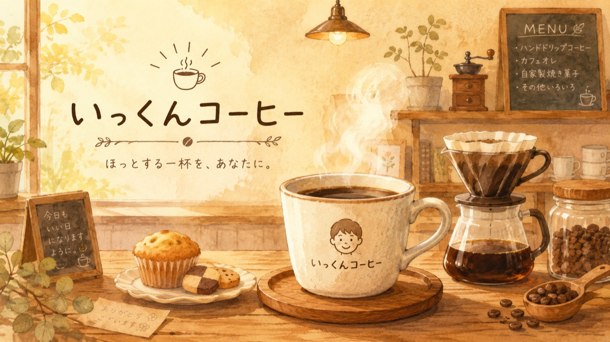
いっくんコーヒー
- 住所: 益田市周辺
- 営業時間: 調査中
コーヒーの提供だけでなく、イベント出店なども行っている模様。
Sweets & Bread 2. スイーツ・パン
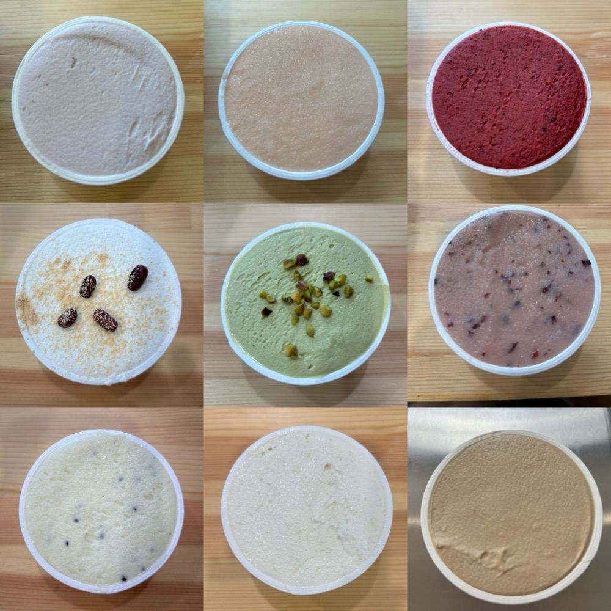
Gelateria Fortuna
- 住所: 山口県萩市須佐4737-2（※益田市近郊）
- 電話: 090-7395-5091
- 営業時間: 13:00〜17:00（不定休）
萩市や阿武町の旬の果物・野菜を使った手作りジェラート専門店。人工的な添加物・着色料・保存料は一切不使用。素材本来のおいしさをお楽しみください。
公式Instagramを見る ➔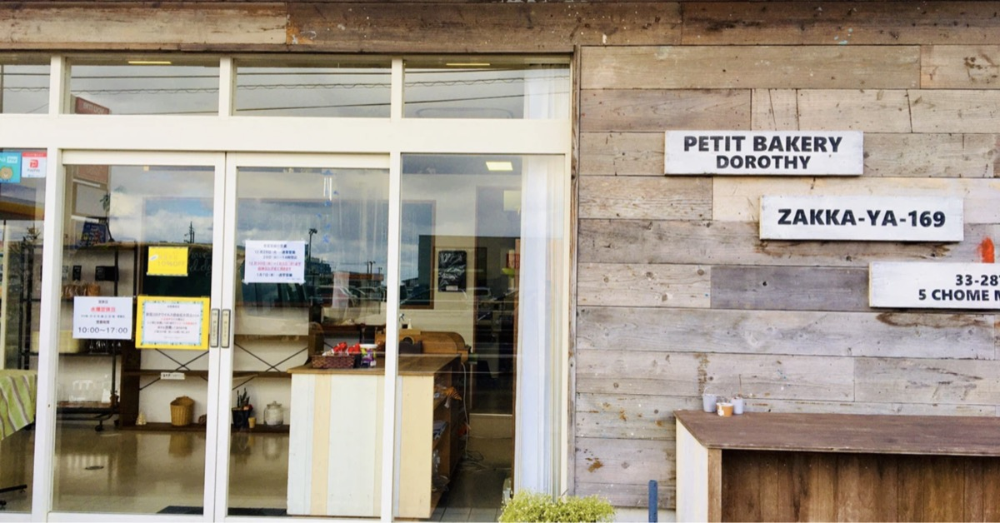
ベーカリードロシー
- 住所: 益田市高津5-33-28
- 営業時間: 10:00〜18:00
地元で人気のパン屋さん。寅虎食堂でのパン販売や飲食店への納品も行っている。
公式Instagramを見る ➔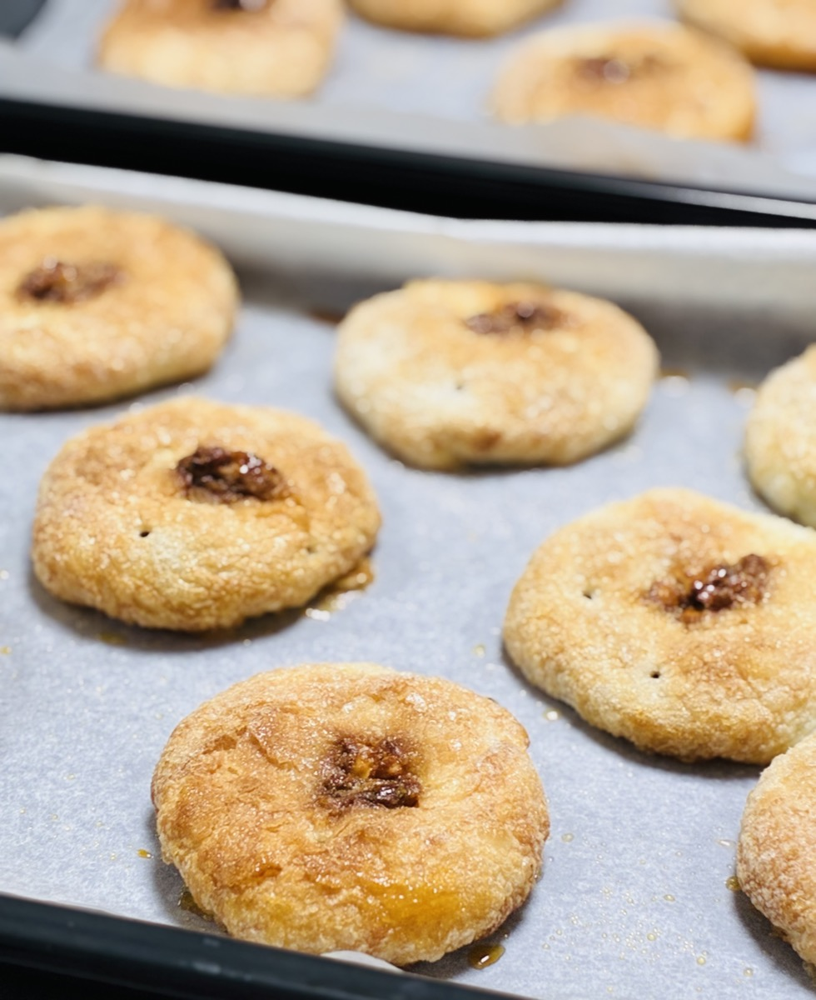
1010 toto
- 住所: 益田市喜阿弥町イ747
- 電話: 090-4147-5267
- 定休日: 不定休（事前予約制）
原材料は国産無添加にこだわり、ひとつひとつ丁寧に手作りしています。焼きたてはさっくり、日ごとにバターがあんこになじみしっとりと。PIEとANKOの極上のコラボレーションをお楽しみください。
公式Instagramを見る ➔Handmade & Space 3. 雑貨・ハンドメイド・コミュニティ
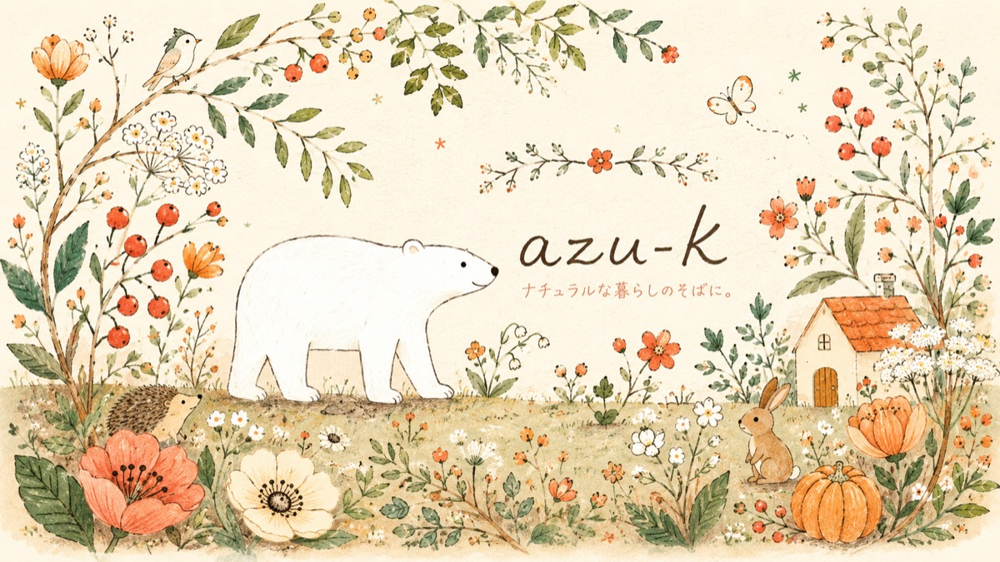
手作り雑貨のお店az u−k
- 住所: 益田市内
- 営業時間: 不定休（Instagram等で告知）
天然石を使ったお守りアクセサリーや布小物、ハーブティーなどを扱う可愛い雑貨店。
公式Instagramを見る ➔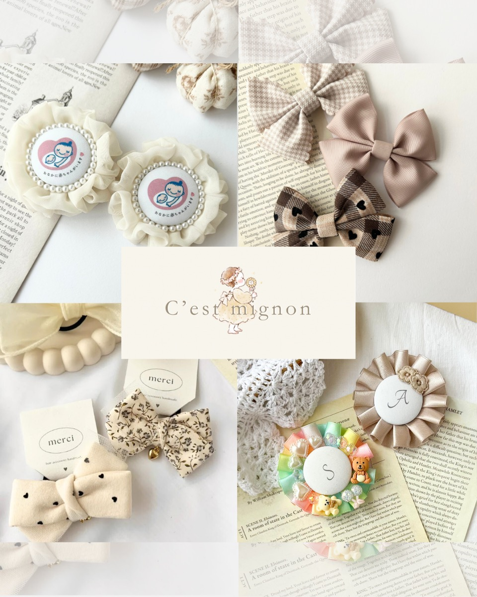
C'est mignon
- 住所: 益田市水分町5-11
- 電話: 080-1900-9613
マタニティロゼットキーホルダーやベビー＆キッズ向けヘアアクセサリーの制作販売。イベント時には、子供から大人まで楽しめる可愛いハンドメイドワークショップも開催しています！
公式Instagramを見る ➔Blue Rose＆em
- 販売: イベント出店・Instagram中心
心を込めて作ったハンドメイド作品を販売しています。ひとつひとつ丁寧に仕上げた、あたたかみのある作品をぜひお手に取ってご覧ください。
公式Instagramを見る ➔
ミラッパ
- 住所: 益田市高津周辺
- 営業時間: 調査中
インド雑貨などを扱うほか、シェアスペースとして様々なイベントやワークショップが開催されるコミュニティの場。
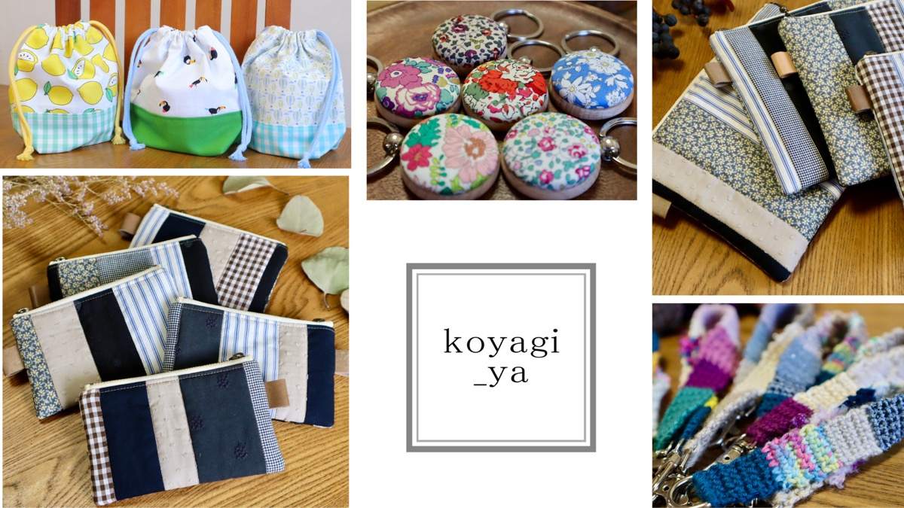
koyagi_ya
- 販売: イベント出店・Instagram中心
「手に取られた方に、少しでも笑顔になって頂きたい。」そんな想いを込めた雑貨づくりを目指しています。
公式Instagramを見る ➔
ワークショップめぐ
- 住所: 益田市内
- 営業時間: 調査中
各種ワークショップやイベントへの出店を中心に活動している模様。
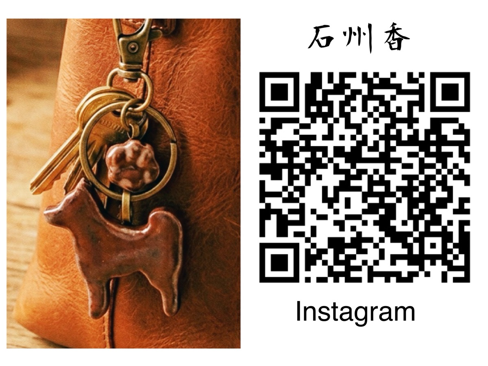
タイルリメイク
- 住所: 益田市乙吉町イ496-1（※店舗なし）
- 活動内容: ワークショップ・制作販売
モザイクタイルを使ったワークショップや、石州瓦のやきもの作品を制作販売しています。美濃焼のカラフルなタイルや、石州瓦のやきものに触れて日本の伝統文化を感じてみませんか？
公式Instagramを見る ➔Clinic 4. 治療院
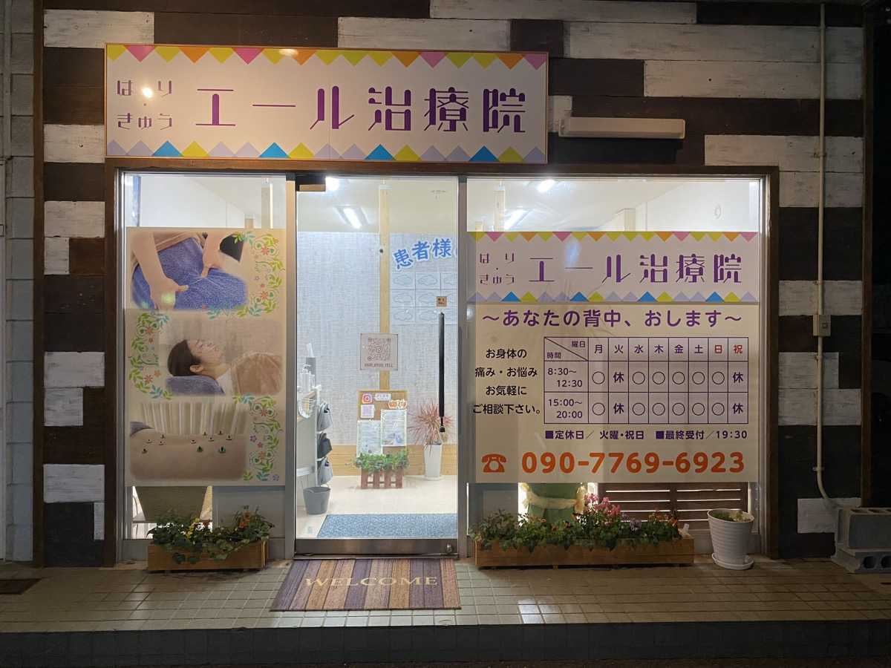
はり・きゅう エール治療院
- 住所: 益田市高津5丁目33-26
- 電話: 090-7769-6923
- 営業時間: 8:30〜20:00（火曜定休）
「あなたの背中、おします👍👍」肩や腰の痛み、スポーツ障害の治療はもちろん、美容鍼にも力を入れているアットホームで居心地の良い治療院です。
公式Instagramを見る ➔